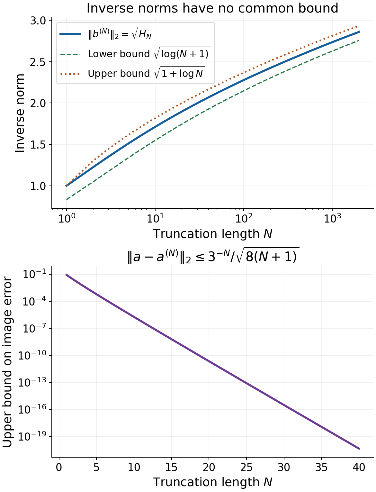
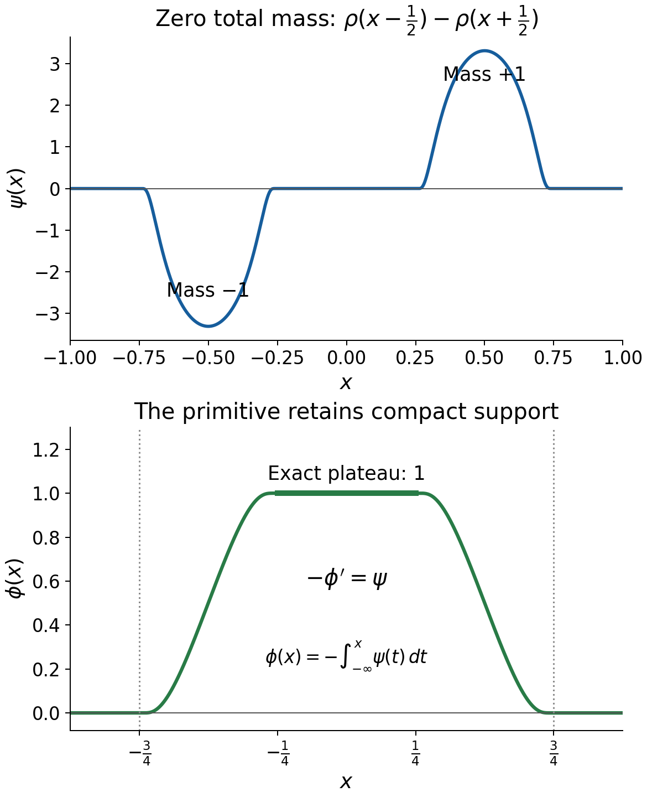

Learning Fréchet duality and smooth convolution solvability
Written by GPT-6.1 Sol (OpenAI), Ultra reasoning effort, October 2026. Self-checked by the writing AI, GPT-6.1 Sol (OpenAI). Public domain (CC0).
An operator can approximate every right-hand side and still fail to solve some equations. The missing ingredient is a bound on its inverses. For convolution, that bound has two parts: the inverse distributions must stay inside one compact set, and their orders must stay bounded. The formal chapter constructs both bounds and explains why they close the dual range.
Basic references are Tao's Baire-category notes, Grubb's Fourier-distribution notes, and Hörmander's The Analysis of Linear Partial Differential Operators, volumes I and II. The full arguments are in the accompanying formal chapter. Banach estimates, quotient spaces and compact parameter arguments supplies Hahn–Banach, Baire and Fréchet open mapping. Begin with Support distances and admissible convolution domains for the geometric criterion, and Slow decrease and entire Fourier division for invertibility.
1. What the dual criteria say
For a continuous linear map \(T:E\to F\) between Fréchet spaces, the adjoint acts by
\[ T'g(x)=g(Tx),\qquad g\in F',\ x\in E. \tag{E1.1} \]The pairing is bilinear, including over the complex field. Injectivity of \(T'\) means that no nonzero continuous scalar test annihilates the whole range of \(T\). Hahn–Banach then makes that range dense. Surjectivity needs more.
Theorem 4.2 of the formal chapter gives the exact additional condition:
\[ T\text{ is onto} \quad\Longleftrightarrow\quad T'\text{ is injective and }T'(F') \text{ is closed in }\sigma(E',E). \tag{E1.2} \]Here weak-star convergence means convergence on every vector of \(E\).
How can one establish that closure? For a neighborhood \(U\) of zero in \(E\), its polar is
\[ U^\circ=\{\ell\in E':|\ell(x)|\le1\text{ for all }x\in U\}. \tag{E1.3} \]Theorem 3.1 says that a linear \(M\subset E'\) is weak-star closed exactly when every section \(M\cap U^\circ\) is weak-star closed. The proof constructs seminorms from those sections, identifies a quotient dual and turns approximate openness into openness by summable corrections. It applies to all Fréchet spaces. A sequence argument alone would not prove compactness of arbitrary weak-star polars; Lemma 1.1 supplies the full product-compactness proof.
For convolution \(Tu=\mu*u\), the adjoint is \(T'\phi=\check\mu*\phi\). Support convexity confines \(\phi\) to one compact subset of the equation domain when \(T'\phi\) lies in a fixed polar. Invertibility gives a common polynomial bound for \(F_\phi\), hence a common distributional order. Lemma 7.1 places the entire inverse polar inside one compact polar and proves it closed there.
2. Four worked examples
Example 1. A shift on a product Fréchet space
Let \(E=\mathbb K^{\mathbb N}\) with
\[ p_j(x)=\max_{1\le k\le j}|x_k|. \tag{E2.1} \]Every coordinatewise Cauchy sequence has a coordinatewise limit, and its first \(j\) coordinates converge uniformly for each finite \(j\). Thus this topology is complete and metrizable: \(E\) is Fréchet.
Every continuous linear functional depends on finitely many coordinates. Indeed continuity gives \(|\ell(x)|\le C p_j(x)\) for some \(C,j\). A vector with its first \(j\) coordinates zero has seminorm zero, so scaling it gives \(\ell(x)=0\). Consequently
\[ \ell_a(x)=\sum_{k=1}^j a_kx_k,\qquad E'=\mathbb K^{(\mathbb N)}, \tag{E2.2} \]where the parentheses mean finite support. Conversely each finite sum is continuous. The polar \(B_{p_j}\) is exactly
\[ \{a:a_k=0\ (k>j),\ \sum_{k=1}^j|a_k|\le1\}. \tag{E2.3} \]The upper bound follows from the triangle inequality. For equality, choose \(x_k\) of modulus one so that each \(a_kx_k=|a_k|\). This includes complex coefficients without changing the bilinear pairing.
Define \(Tx=(x_2,x_3,\ldots)\). It is continuous because \(p_j(Tx)\le p_{j+1}(x)\), and it is onto: given \(y\), choose \(x_1=0\) and \(x_{k+1}=y_k\). Its adjoint inserts a zero:
\[ T'a=(0,a_1,a_2,\ldots). \tag{E2.4} \]It is injective, and its range is the weak-star closed hyperplane \(\{a:a_1=0\}\), since \(a_1=\ell_a(e_1)\) is an evaluation. This is (E1.2) in a nonnormable space.
Example 2. Dense range with unbounded inverses
On \(E=F=\ell^2(\mathbb N)\), use the bilinear identification \(\ell_a(x)=\sum_ka_kx_k\), with \(a\in\ell^2\). Cauchy–Schwarz proves continuity and the norm is \(\|a\|_2\), attained using the conjugate phase of \(a\) in the test vector. Conversely, for a continuous \(\ell\), set \(a_k=\ell(e_k)\). Testing on the first \(N\) conjugate coefficients normalized in \(\ell^2\) gives \(\sum_{k\le N}|a_k|^2\le\|\ell\|^2\), including the case when that finite sum is zero. Hence \(a\in\ell^2\), and equality with \(\ell_a\) on all of \(\ell^2\) follows by truncation and continuity. This proves the full dual identification. Define
\[ (Tx)_k=3^{-k}x_k. \tag{E2.5} \]It is bounded with norm \(1/3\). Its range contains every finite sequence, hence is dense. Its adjoint is the same diagonal multiplier and is injective.
Nevertheless the vector
\[ a_k=\frac{3^{-k}}{\sqrt{k}} \tag{E2.6} \]has no preimage in \(\ell^2\): a preimage would have coordinates \(1/\sqrt{k}\), whose squared norm is the divergent harmonic series. The image does belong to \(\ell^2\), since
\[ \|a\|_2^2=\sum_{k\ge1}\frac{9^{-k}}{k} =\log(9/8)<1. \tag{E2.7} \]To prove the equality, integrate the uniformly convergent geometric series on \(0\le t\le1/9\): \(\sum_{k\ge1}t^k/k=-\log(1-t)\).
Let \(a^{(N)}\) be the first \(N\) coordinates of \(a\), with all later coordinates zero. Then \(a^{(N)}=T'b^{(N)}\), where \(b^{(N)}_k=1/\sqrt{k}\) for \(k\le N\). All \(a^{(N)}\) lie in the unit dual ball and converge in norm, hence weak-star, to \(a\). The limit is outside \(T'(F')\). Thus even the section of that range by the unit polar is not closed.
The quantitative obstruction is
\[ \|b^{(N)}\|_2=\sqrt{H_N},\qquad \log(N+1)\le H_N=\sum_{k=1}^N\frac1k\le1+\log N, \tag{E2.8} \]obtained by upper and lower integral comparisons for \(1/t\). Meanwhile
\[ \|a-a^{(N)}\|_2 \le\frac{3^{-N}}{\sqrt{8(N+1)}}. \tag{E2.9} \]Indeed \(1/k\le1/(N+1)\) in the tail and its geometric sum is \(9^{-N}/8\). The data converge rapidly while the inverse norms grow without bound.

The upper panel shows the exact finite harmonic sums and both proved bounds in (E2.8). The lower panel shows the upper bound in (E2.9), rather than an asserted equality for the tail. These inequalities prove the behavior for every \(N\); the plotted samples illustrate it.
Example 3. Translation on disconnected domains
Take \(\mu=\delta_{2/3}\) and
\[ X_1=(-4,-2)\cup(0,3),\qquad X_2=(2/3,11/3). \tag{E2.10} \]Then \(X_2-\operatorname{supp}\mu=(0,3)\subset X_1\). For any smooth \(f\) on \(X_2\), set
\[ u(y)= \begin{cases} f(y+2/3),&y\in(0,3),\\ 0,&y\in(-4,-2). \end{cases} \tag{E2.11} \]It is smooth on \(X_1\), since the two components are disjoint open intervals, and \((\mu*u)(x)=u(x-2/3)=f(x)\).
The kernel is invertible: its Fourier transform has modulus one on the real line and satisfies the slow-decrease definition by using the real center itself. For any compact \(\phi\) in \(X_2\), \(T'\phi=\delta_{-2/3}*\phi\) translates its support into \((0,3)\). Both support distances to the respective complements are equal, since translation preserves the distances to the two endpoints of those intervals. Thus this pair is support-convex. Keeping the entire translated component is essential. A smaller interval would acquire new boundary points that \(X_1\) does not have.
The unused component permits arbitrary additional smooth choices of \(u\). Surjectivity asserts existence, and does not imply a unique solution.
Example 4. The derivative and the mass-zero dual range
Let \(X=(-2,2)\), \(\mu=\delta'_0\). The distributional convention \(\delta'_0(h)=-h'(0)\) gives
\[ Tu=\mu*u=u',\qquad T'\phi=-\phi'. \tag{E2.12} \]Every smooth \(f\) has the smooth solution \(u(x)=\int_0^xf(t)\,dt\). Constants form the kernel.
The exact compact dual range is
\[ T'(\mathcal E'(X)) =\{\psi\in\mathcal E'(X):\psi(1)=0\}. \tag{E2.13} \]Necessity follows from \((-\phi')(1)=\phi(1')=0\). For sufficiency, extend a compact \(\psi\) to the real line and assume \(\psi(1)=0\). For a compact test \(\theta\), put
\[ v(\theta)=-\psi\left(y\longmapsto \int_{-\infty}^y\theta(t)\,dt\right). \tag{E2.14} \]This is a distribution: on each fixed compact test family, the primitive and its derivatives near \(\operatorname{supp}\psi\) have bounds by finitely many test seminorms. Since the primitive of \(\theta'\) is \(\theta\), one has \(v'=\psi\).
If \(\operatorname{supp}\psi\subset[a,b]\subset X\), a test supported to the left of \([a,b]\) has a constant primitive on that interval; its pairing vanishes by \(\psi(1)=0\). A test to the right has primitive zero there. Splitting a test outside \([a,b]\) into its left and right portions proves \(\operatorname{supp}v\subset[a,b]\). Hence \(\phi=-v\) lies in \(\mathcal E'(X)\) and \(T'\phi=\psi\). The zero distribution is handled by \(\phi=0\).
The range in (2.13) is weak-star closed because evaluation at the constant function is continuous. The adjoint is injective: a compact distribution with derivative zero is zero, or one can use compact convolution injectivity from the formal chapter. Thus (E1.2) recovers the antiderivative result.

Here \(\rho\) is the nonnegative smooth probability bump of radius \(1/4\) defined below. The plotted functions are
\[ \psi(x)=\rho(x-1/2)-\rho(x+1/2),\qquad \phi(x)=-\int_{-\infty}^x\psi(t)\,dt. \tag{E2.15} \]Thus \(-\phi'=\psi\), both supports are contained in \([-3/4,3/4]\), and \(\phi=1\) on \([-1/4,1/4]\). The curves are numerical samples of these exact formulas. The bump is \(\rho(t)=c\exp[-1/(1-16t^2)]\) for \(|t|<1/4\), zero elsewhere, with \(c\) chosen so its integral is one. Smoothness at the endpoints follows from exponential decay dominating every power, as in the cutoff construction in the linked foundation.
3. Reading the convolution theorem correctly
Theorem 8.1 concerns a compact kernel and nonempty open domains satisfying \(X_2-\operatorname{supp}\mu\subset X_1\). It equates:
- Smooth solutions for every smooth forcing on \(X_2\).
- Distributional solutions for every smooth forcing on \(X_2\).
- Kernel invertibility and support convexity of the domain pair.
The forcing remains smooth in both solution statements. The theorem does not replace it by an arbitrary distribution. It also imposes no uniqueness condition.
For sufficiency, the proof passes through
\[ \begin{aligned} &\operatorname{supp}(T'\phi)\subset K_1,\quad |T'\phi(u)|\le q_{K_1,N}(u)\\ &\qquad\Longrightarrow \operatorname{supp}\phi\subset K_2\Subset X_2,\quad |F_\phi(\xi)|\le C(1+|\xi|)^m\\ &\qquad\Longrightarrow |\phi(h)|\le B q_{L_2,2s}(h),\quad 2s>m+n. \end{aligned} \tag{E3.1} \]The first support bound is geometric. The polynomial bound uses the complete space of weighted entire quotients and Baire. The last bound uses a fixed cutoff, Schwartz inversion and an integrable frequency weight. Every member of the inverse polar obeys the same bounds. Closedness inside one compact polar then gives compactness of the whole inverse polar.
4. Exercises and full solutions
Exercise 1 (10 points). On \(\mathbb C^{\mathbb N}\) with (E2.1), define \(Rx=(0,x_1,x_2,\ldots)\). Compute its kernel, range, adjoint and adjoint kernel. Identify which condition in (E1.2) fails. Determine \(B_{p_2}\) explicitly for complex coefficients.
Solution. The kernel of \(R\) is zero, and its range is \(\{y:y_1=0\}\), a proper closed subspace. The bilinear pairing gives \(R'a=(a_2,a_3,\ldots)\). Its kernel is the one-dimensional span of the first coordinate functional, so adjoint injectivity fails. Its range is all the finite sequences and is therefore closed as a subset of \(E'\). The polar consists of \(a_k=0\) for \(k>2\), with \(|a_1|+|a_2|\le1\). If a coefficient beyond the second were nonzero, a test with its first two coordinates zero could make its value arbitrarily large. For the first two coefficients, choose \(x_k=\overline{a_k}/|a_k|\) when \(a_k\ne0\), and \(x_k=0\) otherwise. This attains \(|a_1|+|a_2|\) with \(p_2(x)\le1\), proving both directions.
Exercise 2 (10 points). Replace the multiplier in Example 2 by \(d_k=5^{-k}\). Give a vector in \(\ell^2\) outside the range, a sequence in the adjoint range converging weak-star to it inside the unit polar, and explicit inverse and tail bounds.
Solution. Set \(a_k=5^{-k}/\sqrt{k}\). Its norm squared is \(-\log(1-1/25)=\log(25/24)<1\), by the same integrated geometric series. A preimage must equal \(1/\sqrt{k}\), which is not square summable. The truncations \(a^{(N)}=T'b^{(N)}\) have inverse squared norms \(H_N\), between \(\log(N+1)\) and \(1+\log N\). They lie inside the unit polar. Their squared tail norm is at most \(25^{-N}/[24(N+1)]\), so they converge in norm to \(a\). Cauchy–Schwarz makes this convergence pointwise on every \(\ell^2\) vector. Thus the adjoint range section by the unit polar is not closed, and adjoint injectivity together with density does not imply surjectivity.
Exercise 3 (10 points). In the summable-lifting proof, explain why completeness of \(E\) suffices although \(G\) is not assumed complete. Retain the bounds for an arbitrary fixed \(p_k\), the chosen neighborhood seminorm \(p_{j_0}\), and an arbitrary \(q_k\).
Solution. The terms satisfy \(p_{j_0+j}(x_j)<\varepsilon2^{-j-2}\). Once \(j_0+j\ge k\), monotonicity bounds \(p_k(x_j)\) by that same number; the finitely many earlier terms do not affect the Cauchy property of the partial sums. Their limit \(x\) exists in complete \(E\). Also \(p_{j_0}(x)\le\sum_{j\ge0}\varepsilon2^{-j-2}=\varepsilon/2<\varepsilon\), so \(x\) lies in the prescribed neighborhood. The residual \(r_j\) satisfies \(q_{j+1}(r_j)<2^{-j}\), hence tends to zero in every fixed \(q_k\). The finite sums already have images \(y-r_j\); continuity takes their limit to \(Sx=y\). No Cauchy limit is sought in \(G\): the residuals converge to its already existing zero, and the image limit is the already existing \(y\). Finally the image contains a neighborhood and is linear, so absorption makes it all of \(G\).
Exercise 4 (10 points). In Theorem 3.1, prove the identity (3.2) from the bipolar theorem, including the case \(q_j(x)=0\). Explain how the quotient topology then proves closure of \(M\).
Solution. The prepolar of \(C_j\) is \(P=\{x:q_j(x)\le1\}\). If \(|\ell(x)|\le q_j(x)\), then \(\ell\) belongs to \(P^\circ\). Conversely, if \(\ell\in P^\circ\) and \(q_j(x)>0\), apply the polar inequality to \(x/q_j(x)\). If \(q_j(x)=0\), every scalar multiple of \(x\) lies in \(P\), forcing \(\ell(x)=0\). Thus \(P^\circ=\{\ell:|\ell|\le q_j\}\). Since \(C_j\) is weak-star closed and absolutely convex, the bipolar theorem gives \(P^\circ=C_j\). This identifies the \(q_j\)-continuous dual of \(E/N\) with \(M\). The quotient map is approximately open because the bipolar of its \(p_j\) unit-ball image is \(\{q_j\le1\}\), which contains \(\{q_j<1\}\). Summable lifting makes it open. Therefore its topology is the original quotient topology, whose continuous dual is \(N^\perp\). Hence \(M=N^\perp\), an intersection of weak-star closed evaluation kernels.
Exercise 5 (8 points). Let \(X_1=(-5,-3)\cup(1,4)\), \(\mu=\delta_{-1/2}\). Choose the full equation component corresponding to \((1,4)\), construct solutions for every smooth forcing there, and compute the two support distances for \(\phi=\delta_2+\delta_3\).
Solution. Since \((\mu*u)(x)=u(x+1/2)\), the equation component is \(X_2=(1/2,7/2)\). Set \(u(y)=f(y-1/2)\) on \((1,4)\), with zero on the other component. The adjoint translates by \(+1/2\), so \(T'\phi=\delta_{5/2}+\delta_{7/2}\). The distance of \(\{2,3\}\) to \(X_2^c\) is \(1/2\), attained from \(3\) to \(7/2\). The image support has distance \(1/2\) to \(X_1^c\), attained from \(7/2\) to \(4\). Compatibility and smoothness hold on the two components separately. Extra solutions can be obtained by changing \(u\) arbitrarily on \((-5,-3)\).
Exercise 6 (10 points). Establish (E2.14) and its compact-support conclusion in detail. Apply it to \(\psi=\delta_{1/2}-\delta_{-1/2}\), and give the inverse \(\phi\) with \(-\phi'=\psi\).
Solution. On a fixed compact support for \(\theta\), its primitive is bounded on a compact neighborhood of \(\operatorname{supp}\psi\) by a finite interval length times \(\|\theta\|_\infty\); its \(r\)-th derivative for \(r\ge1\) equals \(\theta^{(r-1)}\). A finite-order bound for \(\psi\) therefore proves continuity in the test-function topology. The identity \(\int_{-\infty}^y\theta'(t)\,dt=\theta(y)\) gives \(v'=\psi\) with the displayed sign. If a test is supported left of \([a,b]\), its primitive on \([a,b]\) is a constant and is killed by zero mass. If it is supported right, the primitive is zero there. Any compact test outside \([a,b]\) splits into those two tests, proving that \(v\) is supported in \([a,b]\). For the given atoms, \(v\) is the locally integrable function equal to \(-1\) on \((-1/2,1/2)\) and zero outside. Its derivative is \(\delta_{1/2}-\delta_{-1/2}\). Hence \(\phi\) is the indicator of \([-1/2,1/2]\), understood as a distribution; endpoint values do not change that distribution.
Exercise 7 (10 points). Why does the uniform-division lemma retain the fixed factor \((1+|\zeta|)^{-N}\)? Prove its Baire rescaling bound and explain why the common exponent is stronger than assigning a separate exponent to each quotient.
Solution. The product transform in a fixed inverse polar has order at most \(N\), so its entire growth bound is \(C(1+|\zeta|)^Ne^{H_K(\operatorname{Im}\zeta)}\). Dropping this factor would discard transforms that actually occur. The norm in (5.2) keeps it, and the local nonzero-multiplier estimate proves compact evaluation continuity and Banach completeness with that weight. Entire division gives each quotient some real polynomial bound, so the closed sets \(D_j\) in (5.4) cover the entire Banach space. If \(B(G_0,r)\subset D_j\), then \(G_0+H\) and \(G_0\) give \(|H(\xi)|\le2j(1+|\xi|)^j\) for \(\|H\|<r\). For nonzero \(G\), use \(H=rG/(2\|G\|)\) to obtain \(|G(\xi)|\le(4j/r)\|G\|(1+|\xi|)^j\). The zero quotient is immediate. The same \(j\) controls every quotient in the norm unit ball; individual exponents could grow without bound and would not supply one distributional seminorm polar.
Exercise 8 (12 points). In dimension one, suppose an inverse family has support in one compact \(K_2\subset X_2\) and \(|F_\phi(\xi)|\le C(1+|\xi|)^2\). Use a fixed smooth compact cutoff to bound its action by derivatives of order at most four. Compute the frequency-weight integral exactly.
Solution. Choose \(\chi\in C_c^\infty(X_2)\) equal to one near \(K_2\), with support \(L\). The derivative identity
\[ (1+\xi^2)^2F_{\chi h}(\xi) =F_{\chi h-2(\chi h)''+(\chi h)''''}(\xi) \tag{E4.1} \]follows by four integrations by parts, with no boundary terms. Leibniz's rule and the finite support length give a constant \(C_\chi\) such that
\[ |F_{\chi h}(-\xi)|\le C_\chi(1+\xi^2)^{-2} \max_{0\le r\le4}\sup_L|h^{(r)}|. \tag{E4.2} \]Here all cutoff derivatives through order four are fixed. On \(0\le t<\infty\), \(\int_0^\infty(1+t^2)^{-2}dt=\pi/4\), \(\int_0^\infty t(1+t^2)^{-2}dt=1/2\), and \(\int_0^\infty t^2(1+t^2)^{-2}dt=\pi/4\). The first and third follow from \(t=\tan\theta\), integrating \(\cos^2\theta\) and \(\sin^2\theta\) on \([0,\pi/2]\); the middle follows from \(s=1+t^2\). Therefore
\[ \int_{\mathbb R}\frac{(1+|\xi|)^2}{(1+\xi^2)^2}\,d\xi =\pi+2. \tag{E4.3} \]Bilinear Schwartz inversion gives
\[ |\phi(h)|\le \frac{CC_\chi(\pi+2)}{2\pi} \max_{0\le r\le4}\sup_L|h^{(r)}|. \tag{E4.4} \]The reflected frequency in (4.2), the factor \(1/(2\pi)\), and every derivative order are retained. Thus the entire family lies in one seminorm polar. Support confinement alone would not provide the uniform order needed here.
Exercise 9 (10 points). For \(\mu=\delta_0\), \(X_1=(-2,2)\), \(X_2=(-1,1)\), show that the smooth forcing
\[ f(x)=\exp\bigl((1-x)^{-2}\bigr) \tag{E4.5} \]has no distributional solution on \(X_1\). Relate this to support convexity.
Solution. A solution would be a distribution \(u\) whose restriction to \(X_2\) is \(f\). Choose nonnegative \(\eta\in C_c^\infty((-1/4,1/4))\) with integral one. Put \(a_j=2^{-j}\), \(t_j=1-a_j\), and \(\theta_j(x)=\eta((x-t_j)/a_j)\). For \(j\ge1\), its support is contained in \([1-5a_j/4,1-3a_j/4]\subset[0,3/2]\cap X_2\). On that support \(f(x)\ge\exp(16/(25a_j^2))\), so positivity gives
\[ u(\theta_j)=\int f\theta_j \ge a_j\exp(16/(25a_j^2)). \tag{E4.6} \]A distribution on \(X_1\) has a finite-order bound on the fixed compact test support \([0,3/2]\). Thus \(|u(\theta_j)|\le C a_j^{-N}\) for some \(C,N\), absorbing the fixed derivatives of \(\eta\). This contradicts (E4.6), since the exponential dominates \(a_j^{-N-1}\); taking logarithms makes the contradiction explicit. For the point test \(\delta_0\), its distance to \(X_2^c\) is \(1\), while the unchanged image has distance \(2\) to \(X_1^c\). The pair fails the exact support-distance criterion despite the invertible identity kernel. Mere compatibility does not ensure solvability.
Exercise 10 (10 points). On the whole real line let \(\mu=\delta_0-\delta_1\). Prove invertibility directly from slow decrease, apply Theorem 8.1 to arbitrary smooth forcing, and find explicit solutions for \(f(x)=e^{\lambda x}\), including every resonant \(\lambda\in2\pi i\mathbb Z\).
Solution. The transform is \(F_\mu(\zeta)=1-e^{-i\zeta}\). For every real center \(\xi\), choose \(\zeta=\xi+i\). Then \(|\zeta-\xi|=1\le2\log(2+|\xi|)\), and
\[ |1-e^{-i(\xi+i)}|\ge e-1>1 \ge(2+|\xi|)^{-2}. \tag{E4.7} \]This is a slow-decrease window bound with constant \(2\), so the kernel is invertible by the linked characterization. The whole-space domain pair is support-convex by the convex maximal-domain theorem, or because both complement distances are infinite for every nonzero compact test. Thus Theorem 8.1 gives a smooth solution for every smooth \(f\). If \(e^{-\lambda}\ne1\), take \(u(x)=e^{\lambda x}/(1-e^{-\lambda})\). Then \(u(x)-u(x-1)=f(x)\). If \(\lambda=2\pi ik\), take \(u(x)=x e^{\lambda x}\), since the exponential is one-periodic. This includes \(\lambda=0\). Real forcing can be handled by real parts because the operator has real coefficients. Real Fourier zeros at \(2\pi k\) therefore do not contradict invertibility or the smooth-forcing theorem.
References
- Terence Tao, “245B, Notes 9: The Baire category theorem and its Banach space consequences,” 2009, freely readable notes.
- Gerd Grubb, Distributions and Operators, Chapter 5, “Fourier transformation of distributions,” freely readable lecture notes.
- Lars Hörmander, The Analysis of Linear Partial Differential Operators I: Distribution Theory and Fourier Analysis, second edition, Springer, 1990.
- Lars Hörmander, The Analysis of Linear Partial Differential Operators II: Differential Operators with Constant Coefficients, Springer, 1983.
- The full polars, lifting, dual closure, adjoint criterion and smooth-solvability proofs are in the accompanying formal chapter. The examples and exercises here are original.
Complete proof
Support geometry controls where a transpose inverse can live. Fourier division controls its order. Together these give smooth convolution solvability, once the relevant dual range is closed. We prove the two general Fréchet-space duality statements needed for that conclusion, including the polar-section closure criterion, and then construct the uniform bounds for convolution.
Basic references are Tao's notes on Baire's theorem and its Banach-space consequences, Grubb's Fourier-distribution notes, and Hörmander's The Analysis of Linear Partial Differential Operators, volumes I and II. Normed Hahn–Banach, dual norm tests, dual operator-space completeness, Baire and the full Fréchet open-mapping theorem are proved in Sections 3, 5, 6 and 14 of Banach estimates, quotient spaces and compact parameter arguments. We use the seminorm extension and gauge arguments proved in Propositions 1.1–1.2 of Continuous functionals, test families and compact limits. Compact scalar disks and their finite-dimensional topology are supplied by Metric and topological foundations.
The exact Fourier inputs are the entire-division characterization in Theorem 1.1 of Slow decrease and entire Fourier division, the local nonzero-entire-multiplier estimate in Lemma 2.1 of Analytic forcing and smooth convolution solutions, and the compact Fourier growth criterion in Theorem CF2.1 of Compact Fourier division and multiplicity-sensitive annihilators. Support distances and admissible convolution domains supplies confinement for compact distributions. We supply every additional duality and uniform-bound argument below.
The Fourier pairing uses Theorem 1.1, with its full normalization, of Fourier transforms, finite spectra and convex separation. Smooth cutoffs inside an arbitrary open domain are proved in Section 13.10 of the linked metric foundation.
1. Weak-star polars and compactness
All vector spaces in the duality sections are over \(\mathbb R\) or \(\mathbb C\). Duals consist of continuous linear functionals; the pairing is bilinear. For a locally convex space \(E\), its weak-star dual topology \(\sigma(E',E)\) is pointwise convergence on \(E\). For \(U\subset E\), write
\[ U^\circ=\{\ell\in E':|\ell(x)|\le1\text{ for every }x\in U\}. \tag{1.1} \]For \(A\subset E'\), its prepolar is defined by the same inequality with the roles reversed. A set is absolutely convex when it is convex and balanced under scalar multiplication by scalars of modulus at most one.
Lemma 1.1 (compact seminorm polars). If \(p\) is a continuous seminorm on \(E\), then
\[ B_p=\{\ell\in E':|\ell(x)|\le p(x)\text{ for every }x\in E\} \tag{1.2} \]is weak-star compact and closed. It is the polar of \(\{x:p(x)<1\}\).
Proof. Homogeneity, including scaling vectors in \(\ker p\), proves the last assertion. Embed \(B_p\) by its values in the product of compact scalar disks
\[ \prod_{x\in E}\{z:|z|\le p(x)\}. \tag{1.3} \]Linearity is a closed condition: the equations at \(x+y\) and at \(\lambda x\) are closed equations between finitely many coordinates. Any point satisfying those equations is linear and is continuous by the bound \(p\). Thus \(B_p\) is a closed subset of this product. The product topology on it is exactly the weak-star topology.
Here is the needed arbitrary-product compactness argument. We use Zorn's lemma, also used in the normed Hahn–Banach proof. Every proper filter extends to an ultrafilter: order proper filters containing it by inclusion; the union of a chain remains a proper filter, since each finite collection of its members lies in one filter of the chain. A maximal member therefore exists. Its maximality implies that for any subset \(A\), either \(A\) or its complement belongs to it. Indeed, if adjoining \(A\) cannot preserve properness, one existing filter member is disjoint from \(A\), so the complement belongs to the filter.
On a compact space, the closures of the members of an ultrafilter have the finite-intersection property and hence have a common point. Every neighborhood of that point belongs to the ultrafilter: otherwise its closed complement would belong to it and would exclude the point from one of those closures. The filter therefore converges. Conversely, if every ultrafilter converges but an open cover has no finite subcover, the complements of finite unions of cover members generate a proper filter. An ultrafilter extending it cannot converge, since at any candidate limit a containing cover member and its complement would both belong to the filter. This is a contradiction.
For a product of compact Hausdorff spaces, each coordinate image of an ultrafilter converges to a unique coordinate point. These points form a product point, and every finite-coordinate basic neighborhood belongs to the ultrafilter. Hence it converges in the product. The disk product in (1.3) is nonempty, since the zero coordinates belong to every factor. This proves its compactness with no countability or separability restriction. A closed subset is compact. The weak-star topology is Hausdorff, since distinct functionals differ at some vector, so compact subsets are closed. \(\square\)
Lemma 1.2 (bipolar separation). In a Hausdorff locally convex space \(Z\), the bipolar of a nonempty absolutely convex set \(A\) is its closure, using the continuous dual pairing.
Proof. Every continuous functional bounded by one on \(A\) remains so on its closure \(C\), giving one inclusion. Let \(z_0\notin C\). Choose a balanced convex open neighborhood \(W\) of zero such that \((z_0+W)\cap C=\varnothing\). Put \(V=W/3\). Choose \(0<\lambda<1\) sufficiently close to one that \((\lambda-1)z_0\in W/3\). Then \(\lambda z_0\notin C+V\): otherwise \(c=\lambda z_0-v\) would lie in \(z_0+W\) for some \(c\in C\), a contradiction.
The open absolutely convex absorbing set \(C+V\) has a continuous seminorm gauge \(g\), by the linked gauge proof. It satisfies \(g(c)\le1\) on \(C\) and
\[ g(z_0)\ge1/\lambda>1. \tag{1.4} \]On the scalar line through \(z_0\), define \(L(tz_0)=t g(z_0)\). It is bounded by \(g\). The linked seminorm Hahn–Banach theorem extends it continuously to \(Z\), with \(|L|\le g\). Thus \(|L(c)|\le1\) on \(A\), but \(L(z_0)>1\). This excludes \(z_0\) from the bipolar and proves equality. \(\square\)
For \(Z=E'\) with its weak-star topology, every continuous linear \(L\) is evaluation at a vector of \(E\). Continuity bounds \(L\) by finitely many evaluations at \(x_1,\ldots,x_k\). It therefore vanishes when those evaluations vanish, and factors through their range in the finite-dimensional scalar space. Extend that finite-dimensional linear map and write
\[ L(\ell)=\sum_j a_j\ell(x_j)=\ell\left(\sum_j a_jx_j\right). \tag{1.5} \]Consequently Lemma 1.2 also gives the weak-star bipolar theorem in the dual pair \((E',E)\). In particular a weak-star closed linear \(M\subset E'\) equals the annihilator of its preannihilator.
2. Turning approximate openness into openness
Lemma 2.1 (summable lifting). Let \(E\) be Fréchet, let \(G\) be a Hausdorff metrizable locally convex space, and let \(S:E\to G\) be continuous and linear. Suppose the closure of \(S(U)\) contains a neighborhood of zero in \(G\) for every neighborhood \(U\) of zero in \(E\). Then \(S\) is open and surjective. Completeness of \(G\) is not required for this implication.
Proof. Choose increasing defining seminorms \(p_j\) on \(E\) and \(q_j\) on \(G\). To prove that the image of an arbitrary neighborhood \(U\) contains a neighborhood, choose \(j_0,\varepsilon>0\) such that \(\{p_{j_0}<\varepsilon\}\subset U\). For \(j\ge0\), put
\[ U_j=\{x:p_{j_0+j}(x)<\varepsilon2^{-j-2}\}. \tag{2.1} \]Choose balanced open neighborhoods \(V_j\) in \(G\) contained in \(\overline{S(U_j)}\) and also in \(\{q_{j+1}<2^{-j}\}\).
For \(y\in V_0\), use its membership in \(\overline{S(U_0)}\) to choose \(x_0\in U_0\) with \(r_1=y-Sx_0\in V_1\). Inductively, from \(r_j\in V_j\subset\overline{S(U_j)}\), choose \(x_j\in U_j\) with \(r_{j+1}=r_j-Sx_j\in V_{j+1}\). Every fixed \(p_k\) is eventually bounded on the terms by the summable \(\varepsilon2^{-j-2}\), so \(\sum_jx_j\) is Cauchy in every defining seminorm. Completeness gives \(x\in E\). Also \(p_{j_0}(x)\le\varepsilon/2<\varepsilon\), hence \(x\in U\).
The residuals tend to zero in every \(q_k\), because \(q_k(r_j)\le q_{j+1}(r_j)<2^{-j}\) once \(j+1\ge k\). Continuity and Hausdorffness give \(Sx=y\). Therefore \(V_0\subset S(U)\). This proves openness. The linear range contains a neighborhood of zero; that neighborhood absorbs every vector of \(G\), so the range is all of \(G\). \(\square\)
3. Closed polar sections determine a closed dual subspace
Theorem 3.1 (linear polar-section criterion). If \(E\) is Fréchet and \(M\) is a linear subspace of \(E'\), then \(M\) is weak-star closed if and only if \(M\cap U^\circ\) is weak-star closed for every neighborhood \(U\) of zero in \(E\).
The nontrivial direction is the linear polar-section form of the Banach–Dieudonné theorem. We prove it for general Fréchet spaces.
Proof. If \(M\) is closed, every section is closed because a polar is an intersection of closed evaluation inequalities.
Conversely, choose increasing defining seminorms \(p_j\), set \(B_j=B_{p_j}\), and put \(C_j=M\cap B_j\). The hypothesis makes \(C_j\) weak-star closed. It is absolutely convex and contains zero. Define
\[ q_j(x)=\sup_{\ell\in C_j}|\ell(x)|,\qquad N=\{x:\ell(x)=0\text{ for all }\ell\in M\}. \tag{3.1} \]Then \(q_j\le p_j\), and the \(q_j\) increase. They vanish exactly on \(N\) as a family. Indeed every \(\ell\in M\) is bounded by some \(c p_j\), so \(\ell/c\in C_j\). On \(G=E/N\), the \(q_j\) therefore define a Hausdorff metrizable locally convex topology.
The continuous dual of this \(G\), identified by pullback to \(E\), is exactly \(M\). Every \(\ell\in M\) is bounded by \(c q_j\), as just shown, so is continuous on \(G\). Conversely, a functional continuous for the \(q_j\) is bounded by \(c q_j\) for some \(j\) and is also continuous for the original topology because \(q_j\le p_j\). Lemma 1.2 on the weak-star closed \(C_j\) gives
\[ \{\ell\in E':|\ell(x)|\le q_j(x)\text{ for all }x\}=C_j. \tag{3.2} \]For completeness, the prepolar of \(C_j\) is \(\{q_j\le1\}\); homogeneity, including \(\ker q_j\), identifies its polar with the set on the left of (3.2). The weak-star bipolar equality then proves (3.2). Thus the continuous functional divided by \(c\) lies in \(C_j\), hence in \(M\).
Let \(S:E\to G\) be the quotient map, continuous since \(q_j\le p_j\). For \(U_j=\{p_j<1\}\), its image has polar \(C_j\) in the dual \(G'=M\). Apply Lemma 1.2 in \(G\):
\[ \overline{S(U_j)}=\{z\in G:q_j(z)\le1\}. \tag{3.3} \]In particular it contains a neighborhood of zero. Scaling and the increasing seminorm base show the same for the image of every original neighborhood. Lemma 2.1 makes \(S\) open.
Its quotient topology from the original \(E\) is therefore exactly the \(q_j\) topology. Continuous functionals on that quotient are precisely the original functionals annihilating \(N\): continuity in either direction follows from the quotient map being continuous and open. Since its dual is \(M\), we get
\[ M=N^\perp=\{\ell\in E':\ell|_N=0\}. \tag{3.4} \]This is weak-star closed, being an intersection of closed evaluation kernels. The cases \(M=\{0\}\), \(N=E\) and zero seminorms are included. No separability or sequential characterization of weak-star compactness was used. \(\square\)
4. Surjectivity through the adjoint
Lemma 4.1 (complete Fréchet quotients). If \(N\) is a closed linear subspace of a Fréchet \(E\), then \(E/N\) is Fréchet. For increasing seminorms \(p_j\), its defining seminorms are
\[ \overline p_j(x+N)=\inf_{n\in N}p_j(x+n). \tag{4.1} \]Proof. These are well-defined increasing seminorms. Their balls are the images of the corresponding open balls of \(p_j\), by the infimum definition. They give the quotient topology and make the quotient map open. Closedness of \(N\) makes the family separate cosets: if \(x\notin N\), one original seminorm ball about \(x\) misses \(N\), so its quotient seminorm is positive.
For a Cauchy sequence of cosets, extract a subsequence \(y_j\) such that \(\overline p_j(y_{j+1}-y_j)<2^{-j}\). Choose representatives \(e_j\) of those differences with \(p_j(e_j)<2^{1-j}\). A representative of \(y_1\) plus \(\sum_je_j\) converges in \(E\), since every fixed seminorm bounds the tail by a summable series. Its coset is the limit of the extracted sequence. The original Cauchy sequence has the same limit by the seminorm triangle inequalities. The quotient is metrizable from the countable separating family, so this proves completeness. \(\square\)
Theorem 4.2 (adjoint surjectivity criterion). For a continuous linear \(T:E\to F\) between Fréchet spaces, \(T\) is surjective if and only if its adjoint
\[ T':F'\to E',\qquad (T'g)(x)=g(Tx), \tag{4.2} \]is injective and has weak-star closed range.
Proof, necessity. Surjectivity gives injectivity of \(T'\). The full Fréchet open-mapping theorem in the linked foundation makes \(T\) open. Every \(\ell\in E'\) annihilating \(\ker T\) defines a well-defined linear \(g\) on \(F\) by \(g(Tx)=\ell(x)\). Choose a neighborhood \(U\) on which \(|\ell|\le1\). Openness makes \(T(U)\) a neighborhood and bounds \(g\) there, so \(g\) is continuous. Thus
\[ T'(F')=(\ker T)^\perp, \tag{4.3} \]which is weak-star closed.
Proof, sufficiency. Injectivity of \(T'\) makes \(T(E)\) dense: otherwise the linked closed-subspace separation theorem gives a nonzero \(g\in F'\) vanishing on its closure, contradicting injectivity. Put \(N=\ker T\). The weak-star closed linear range has preannihilator \(N\), because the continuous dual of the Hausdorff locally convex \(F\) separates points. Lemma 1.2 therefore gives \(T'(F')=N^\perp\). On the complete quotient \(H=E/N\), the induced \(\widetilde T:H\to F\) is injective, continuous and has dense range, and its adjoint maps onto all of \(H'\).
Fix a defining seminorm \(p_j\) of \(H\). The space
\[ D_j=\{\ell\in H':\|\ell\|_j :=\sup_{p_j(x)\le1}|\ell(x)|<\infty\} \tag{4.4} \]is Banach: it is the bounded dual of the normed quotient \(H/\ker p_j\), whose dual completeness is proved in the linked operator-space theorem; completeness of that normed quotient is unnecessary. Normed Hahn–Banach gives \(p_j(x)=\sup_{\|\ell\|_j\le1}|\ell(x)|\).
For increasing defining seminorms \(q_m\) on \(F\), put
\[ A_m=D_j\cap\widetilde T'(mB_{q_m}). \tag{4.5} \]Lemma 1.1 and weak-star continuity of the adjoint make \(\widetilde T'(mB_{q_m})\) compact, hence weak-star closed. Norm convergence in \(D_j\) implies pointwise convergence, so \(A_m\) is norm-closed. These sets cover \(D_j\): every functional has a lift in \(F'\), bounded by \(c q_k\), and an integer \(m\ge\max(c,k)\) puts that lift in \(mB_{q_m}\).
If \(D_j=\{0\}\), then \(p_j=0\) and the desired estimate is automatic. Otherwise Baire gives a norm ball \(B(\ell_0,r)\subset A_m\). Subtracting its two lifts shows that every \(h\) with \(\|h\|_j<r\) has a lift \(g\) with \(|g(y)|\le2m q_m(y)\). Rescaling shows that each \(\|\ell\|_j\le1\) has a lift bounded by \((4m/r)q_m\). The dual norm test yields
\[ p_j(x)\le (4m/r)q_m(\widetilde Tx). \tag{4.6} \]For every \(j\) there is such a bound. Thus the inverse on the range is continuous. If \(\widetilde Tx_k\) converges in \(F\), (4.6) makes \(x_k\) Cauchy in every seminorm of \(H\). Completeness gives \(x_k\to x\), and continuity gives the limit \(\widetilde Tx\). The range is therefore sequentially closed, hence closed in the metrizable \(F\). Its density makes it all of \(F\). Hence \(T\) is surjective. \(\square\)
5. A uniform real bound for entire quotients
Let \(\mu\) be an invertible compact distribution on \(\mathbb R^n\), \(n\ge1\), and put
\[ A(\zeta)=F_{\check\mu}(\zeta)=F_\mu(-\zeta),\qquad F_a(\zeta)=a_x(e^{-ix\cdot\zeta}). \tag{5.1} \]Reflection preserves the slow-decrease window bounds by replacing both the real center and the complex argument by their negatives. Thus \(\check\mu\) is invertible too, and \(A\not\equiv0\).
Lemma 5.1 (uniform weighted division). For every nonempty compact convex \(K\subset\mathbb R^n\) and integer \(N\ge0\), there are \(C<\infty\) and integer \(m\ge0\) such that every entire \(G\) with
\[ \|G\|_{N,K}= \sup_{\zeta\in\mathbb C^n}|A(\zeta)G(\zeta)| (1+|\zeta|)^{-N}e^{-H_K(\operatorname{Im}\zeta)}<\infty \tag{5.2} \]satisfies
\[ |G(\xi)|\le C\|G\|_{N,K}(1+|\xi|)^m \quad(\xi\in\mathbb R^n). \tag{5.3} \]The constants depend on \(\mu,N,K\), not on \(G\).
Proof. The space in (5.2) is Banach. The local division estimate in the linked analytic-forcing lesson bounds each compact supremum of \(G\) by a compact supremum of \(AG\), hence by a constant times this norm. The weight and its reciprocal are bounded on that compact set. A norm-Cauchy sequence converges locally uniformly to an entire \(G\). Passing to the pointwise limit in its weighted norm inequality, then taking the supremum, proves norm convergence and finiteness of the limit's norm. Nondegeneracy follows because \(A\) is nonzero on an open set and the identity theorem determines \(G\). The exact polynomial factor is retained throughout.
The product \(AG\) obeys the compact Fourier growth criterion with this fixed \(K,N\), so it is a compact-distribution transform by Theorem CF2.1. The entire-division characterization of invertibility for \(\check\mu\) makes \(G\) a compact-distribution transform too. It therefore has some polynomial growth on real frequencies.
On the complete space in (5.2), the sets
\[ D_j=\{G:|G(\xi)|\le j(1+|\xi|)^j \text{ for every real }\xi\},\qquad j\ge1, \tag{5.4} \]are closed by evaluation continuity and cover the space. Baire gives \(B(G_0,r)\subset D_j\). Subtracting the bounds at \(G_0+H\) and \(G_0\) gives \(|H(\xi)|\le2j(1+|\xi|)^j\) for \(\|H\|_{N,K}<r\). Scaling \(H=rG/(2\|G\|_{N,K})\) gives (5.3) with \(m=j\), \(C=4j/r\). The zero space and zero quotient are immediate. \(\square\)
6. Compact duals and continuity of convolution
Let \(X_1,X_2\) be nonempty open sets with
\[ X_2-\operatorname{supp}\mu\subset X_1. \tag{6.1} \]The linked smooth-space completeness theorem makes \(E=C^\infty(X_1)\), \(F=C^\infty(X_2)\) Fréchet. Their continuous duals are \(\mathcal E'(X_1)\), \(\mathcal E'(X_2)\).
Here is the exact dual identification. A continuous functional on \(C^\infty(X)\) is bounded by
\[ |\ell(h)|\le C\max_{|\alpha|\le N}\sup_K|\partial^\alpha h| \tag{6.2} \]for one compact \(K\subset X\), after taking a finite union of the observation compacts. Its restriction to compact tests is a distribution supported in \(K\). Inserting a cutoff equal to one near \(K\) leaves every value unchanged, because the difference has zero displayed seminorm. Thus it is the compact distributional action on all smooth functions near that support. Conversely a compact distribution has a finite-order bound on a compact neighborhood of its support inside \(X\), making its action continuous on \(C^\infty(X)\). Convexity is unnecessary.
Convolution is a continuous linear map
\[ T:C^\infty(X_1)\to C^\infty(X_2),\qquad Tu=\mu*u. \tag{6.3} \]For compact \(Q\subset X_2\), the whole set \(Q-\operatorname{supp}\mu\) is compact inside \(X_1\). Choose a fixed small neighborhood of the kernel support whose differences with \(Q\) still lie in one compact neighborhood \(L\subset X_1\), and insert one cutoff there. Finite order \(r\) of \(\mu\), Leibniz's rule and differentiation under its pairing give
\[ \max_{|\alpha|\le k}\sup_Q|\partial^\alpha(\mu*u)| \le C_Q\max_{|\beta|\le k+r}\sup_L|\partial^\beta u|. \tag{6.4} \]These are the actual seminorm bounds for continuity.
The bilinear adjoint is
\[ T'\phi=\check\mu*\phi,\qquad \phi\in\mathcal E'(X_2). \tag{6.5} \]Its image support lies in \(\operatorname{supp}\phi-\operatorname{supp}\mu\subset X_1\). For nonzero \(\mu\), compact convolution injectivity makes \(T'\) injective: the transforms of nonzero compact factors are nonzero entire functions, and their product cannot vanish identically. The exact ordinary-support theorem gives the same conclusion.
7. Compact inverse polars from Fourier division
Lemma 7.1. Suppose \(\mu\) is invertible and the pair in (6.1) is \(\mu\)-convex for supports. For every basic neighborhood
\[ U=\{u\in C^\infty(X_1): q_{K_1,N}(u):=\max_{|\alpha|\le N} \sup_{K_1}|\partial^\alpha u|<1\}, \tag{7.1} \]the set \(U^\circ\cap T'(F')\) is weak-star compact.
Proof. Each \(\psi\in U^\circ\) obeys
\[ |\psi(u)|\le q_{K_1,N}(u),\qquad \operatorname{supp}\psi\subset K_1. \tag{7.2} \]Scaling gives the bound for a positive seminorm; arbitrarily large scalar multiples give vanishing for seminorm zero, and also the support inclusion. Put
\[ \Phi=\{\phi\in\mathcal E'(X_2):T'\phi\in U^\circ\}. \tag{7.3} \]Distributional confinement in the linked support-distance criterion gives one compact \(K_2\subset X_2\) containing every support in \(\Phi\). If \(K_1\) or \(K_2\) is empty, only the zero inverse remains and the assertion follows. Assume both are nonempty.
Evaluate (7.2) on the exponential, with a cutoff constant near \(K_1\):
\[ |F_\psi(\zeta)|\le (1+|\zeta|)^N e^{H_{K_1}(\operatorname{Im}\zeta)}. \tag{7.4} \]The cutoff derivatives vanish on \(K_1\), so no enlarged support enters this bound. Replace \(K_1\) by its compact convex hull in the support function. That hull need not lie inside a nonconvex \(X_1\); only the entire growth bound uses it.
Since \(F_\psi=A F_\phi\), Lemma 5.1 gives uniformly
\[ |F_\phi(\xi)|\le C(1+|\xi|)^m\quad(\phi\in\Phi). \tag{7.5} \]Choose a fixed \(\chi\in C_c^\infty(X_2)\) equal to one near \(K_2\), with compact support \(L_2\). For \(h\in C^\infty(X_2)\), extend \(\chi h\) by zero to the real space. For an integer \(s\) with \(2s>m+n\), integration by parts gives
\[ |F_{\chi h}(-\xi)|\le C_\chi(1+|\xi|^2)^{-s} \max_{|\alpha|\le2s}\sup_{L_2}|\partial^\alpha h|. \tag{7.6} \]Indeed \((1+|\xi|^2)^sF_{\chi h}=F_{(1-\Delta)^s(\chi h)}\). The right side's \(L^1\) norm is bounded by a fixed finite box volume, cutoff derivative constants and the finite Leibniz coefficients.
Schwartz inversion, with finite-order uniform interchange in the compact distributional pairing, yields
\[ \begin{aligned} |\phi(h)| &\le (2\pi)^{-n}C \int(1+|\xi|)^m|F_{\chi h}(-\xi)|\,d\xi\\ &\le B\max_{|\alpha|\le2s} \sup_{L_2}|\partial^\alpha h|. \end{aligned} \tag{7.7} \]The integral of \((1+|\xi|)^m(1+|\xi|^2)^{-s}\) is finite since \(2s>m+n\). Thus \(\Phi\) lies in one seminorm polar \(V^\circ\) of \(F\), compact by Lemma 1.1.
The adjoint is weak-star continuous, because evaluation of \(T'\phi\) at \(u\) is evaluation of \(\phi\) at the fixed \(Tu\). Since \(U^\circ\) is closed, \(\Phi=(T')^{-1}(U^\circ)\) is closed. It is a closed subset of the compact \(V^\circ\), hence compact. Its continuous image is exactly
\[ T'\Phi=U^\circ\cap T'(F'), \tag{7.8} \]proving the lemma. \(\square\)
8. The exact smooth solvability equivalence
Theorem 8.1. For a compact distribution \(\mu\) and nonempty open domains satisfying (6.1), these conditions are equivalent:
- Every \(f\in C^\infty(X_2)\) has \(u\in C^\infty(X_1)\) with \(\mu*u=f\) on \(X_2\).
- Every \(f\in C^\infty(X_2)\) has \(u\in\mathcal D'(X_1)\) with \(\mu*u=f\) on \(X_2\).
- The kernel is invertible and \((X_1,X_2)\) is \(\mu\)-convex for supports.
The forcing is smooth in both solution statements. Arbitrary distributional forcing requires additional singular-support geometry.
Proof. The zero kernel makes all three conditions false: nonempty \(X_2\) has nonzero smooth functions, and zero is not invertible. For nonzero \(\mu\), condition 1 implies condition 2 by the regular-distribution inclusion.
Condition 2 implies invertibility by Theorem 1.1 of Smooth forcing, invertible kernels and support confinement. Its Theorem 5.1 gives confinement, and the linked support-distance equivalence gives \(\mu\)-convexity. Thus condition 3 follows.
Assume condition 3. The operator (6.3) is continuous between Fréchet spaces and its adjoint is injective. Lemma 7.1 makes every basic polar section of its dual range compact, hence closed. For any other neighborhood \(U\), choose a basic \(U_0\subset U\). Then
\[ U^\circ\cap T'(F') =U^\circ\cap\bigl(U_0^\circ\cap T'(F')\bigr) \tag{8.1} \]is closed, since the basic section is compact and \(U^\circ\) is closed. Theorem 3.1 makes the entire dual range weak-star closed; Theorem 4.2 makes \(T\) surjective. This proves condition 1 for every smooth forcing and completes the equivalence on arbitrary compatible open domains. \(\square\)
References
- Terence Tao, “245B, Notes 9: The Baire category theorem and its Banach space consequences,” 2009, freely readable notes.
- Gerd Grubb, Distributions and Operators, Chapter 5, “Fourier transformation of distributions,” freely readable lecture notes.
- Lars Hörmander, The Analysis of Linear Partial Differential Operators I: Distribution Theory and Fourier Analysis, second edition, Springer, 1990.
- Lars Hörmander, The Analysis of Linear Partial Differential Operators II: Differential Operators with Constant Coefficients, Springer, 1983.
- The normed Hahn–Banach, Baire and Fréchet open-mapping proofs and exact Fourier/support inputs are the internal lessons linked above. The arbitrary polar compactness, bipolar receiver, summable lifting, polar-section theorem, quotient completeness, adjoint criterion and uniform convolution estimate are proved here.